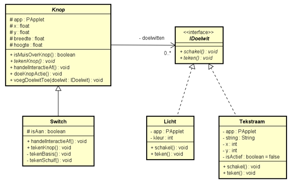
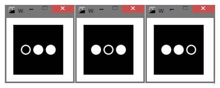
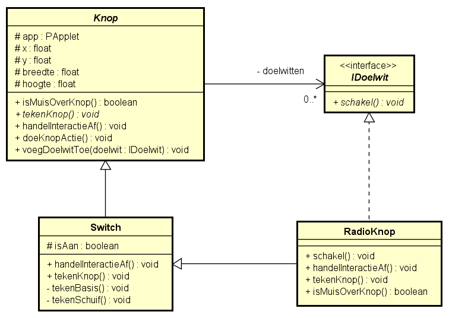

Les 13 - Lesprogramma (L13)
Opgave L13.1 - Meerdere doelwitten
We starten met een programma dat lijkt op het programma uit de screencast, maar met een paar wijzigingen. Je vindt de startcode op OnderwijsOnline en het klassendiagram staat hieronder.

Een knop kan nu meerdere IDoelwitten bevatten. Zodra er op de knop geklikt wordt, moeten alle gekoppelde doelwitten de methode schakel aanroepen.
De klasse Tekstraam plaats een tekst op het scherm als de methode schakel aangeroepen wordt.
L13.1 A
Implementeer deze klassen en laat zien dat het programma werkt door een instantie van Licht en Tekstraam aan een instantie van Switch te koppelen in het hoofdprogramma. Je kunt om te testen de gegeven code in de klasse KnoppenApp gebruiken: hierin wordt een switch gemaakt waaraan een instantie van Licht en een instantie van Tekstraam worden gekoppeld.
L13.1 B
Voeg een tweede switch toe waaraan dezelfde instantie van Licht is gekoppeld als aan de switch uit opgave A. Wat voor probleem kan nu optreden?
L13.1 C
Laat de klasse Switch de interface IDoelwit implementeren. Wat kun je nu realiseren?
Opdracht L13.2 - Radioknoppen
In deze oefening gaan we de implementatie van een interface combineren met een associatie van dezelfde interface binnen één klasse. We bouwen verder op de code van de vorige opdracht.*
Gekoppelde radioknoppen zijn knoppen, waarvan er maar één tegelijkertijd aan kan staan.
Zie onderstaande screenshots voor een voorbeeld. Je ziet hierop steeds drie radioknoppen.

In deze opdracht ga je de klasse Radioknop implementeren door deze te laten erven van Switch en de interface IDoelwit (zie vorige opgave) te laten implementeren. Zie onderstaand klassendiagram.

L13.2 A
Leg uit welke mogelijkheden Radioknop krijgt door:
- te erven van
Switch - de interface
IDoelwitte implementeren
L13.2 B
Implementeer de klasse Radioknop volgens bovenstaande specificatie. De teken() methode van IDoelwit heb je in deze opgave niet nodig en kun je weglaten. Voor de methoden tekenKnop en isMuisOverKnop in deze klasse, kun je onderstaande code gebruiken
@Override
public void tekenKnop() {
app.ellipseMode(PApplet.CENTER);
app.noStroke();
app.fill(255);
app.ellipse(x, y, breedte, hoogte);
if (isAan) {
app.fill(0);
app.ellipse(x, y, breedte - breedte / 4, hoogte - hoogte / 4);
}
}
@Override
public boolean isMuisOverKnop() {
if (PApplet.dist(app.mouseX, app.mouseY, x, y) < breedte / 2) {
return true;
}
else {
return false;
}
}
L13.2 C
Test de klassen in het hoofdprogramma door een ArrayList met drie instanties van RadioKnop te maken. Uiteraard moet je voor elke radioknop de andere twee radioknoppen als doelwit toevoegen. Zorg dat er in totaal drie radioknoppen in het hoofdprogramma zijn die allen aan elkaar gekoppeld zijn (d.w.z. dat van elk van de drie radioknoppen de twee andere radioknoppen als doelwit zijn toegevoegd).